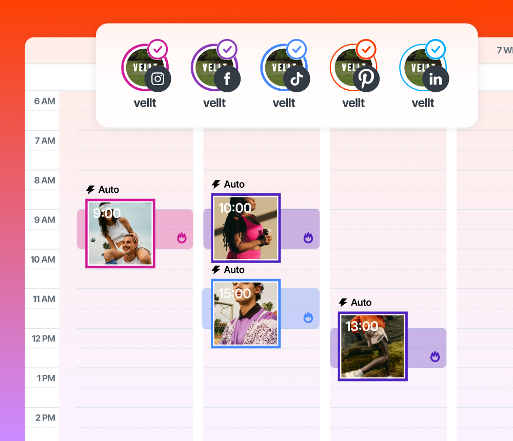
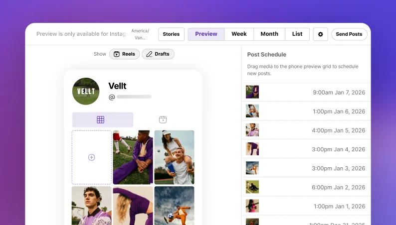
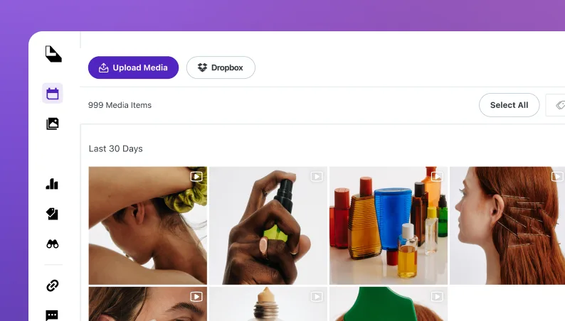
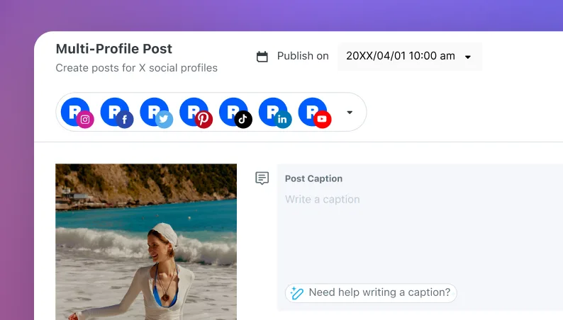

L01 · Later · asset ufficiale
Illustrazione hero dello scheduler
Usare composizione e gerarchia come riferimento; creare immagini Feedway dal proprio design. Piattaforme, integrazioni e claim del concorrente non sono requisiti Feedway.
Apri originale · Pagina di origine ↗

L02 · Later · asset ufficiale
Illustrazione della griglia visuale
Usare composizione e gerarchia come riferimento; creare immagini Feedway dal proprio design. Piattaforme, integrazioni e claim del concorrente non sono requisiti Feedway.
Apri originale · Pagina di origine ↗

L03 · Later · asset ufficiale
Illustrazione della libreria media
Usare composizione e gerarchia come riferimento; creare immagini Feedway dal proprio design. Piattaforme, integrazioni e claim del concorrente non sono requisiti Feedway.
Apri originale · Pagina di origine ↗

L04 · Later · asset ufficiale
Illustrazione della pubblicazione su più piattaforme
Usare composizione e gerarchia come riferimento; creare immagini Feedway dal proprio design. Piattaforme, integrazioni e claim del concorrente non sono requisiti Feedway.
Apri originale · Pagina di origine ↗
L’ipotesi del prototipo è presentazione + demo. Modello commerciale e CTA di vendita non sono ancora definiti. Nessun prezzo, testimonianza o tasso di conversione è stato inventato.